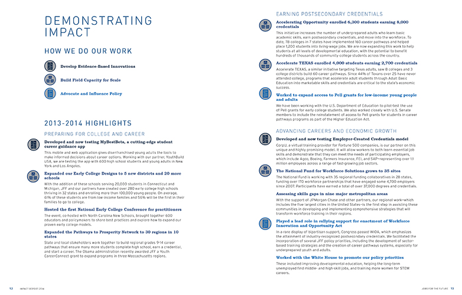

Jobs for the Future: Impact Report 2014
The Jobs for the Future Impact Report highlights JFF's social and economic accomplishments across the nation in 2014. It charts the progress of young people who are on the path to college success, adults who earn a labour market credential, and adults who go on to a family-supporting career.
The impact report is united through the use of consistent fonts and colours even though it is divided to three sections: quick facts, areas of work, and the strategic plan. In the quick facts section statistics are separated into individual circles for easy perusing, the map is broken down into three colour groups for quick understanding, and the ways in which JFF works are represented by icons that are used again at the end of the publication.

Each area of work has a dedicated spread that includes a graph showcasing the growth of the programs, mini infographics to easily disseminate quick information, and a profile highlighting a success story. Simple, bright coloured graphics standout from the page making the data friendlier to read and easier to digest. Each graphic is designed in a way that they can be removed from context and combined into other presentations and reports, yet still retain their meaning.
The end of the publication brings back the "How We Do Our Work" icons that were introduced in the beginning. They are used to break down the 2013–2014 highlights into how they were achieved without being intrusive to the body content. Beyond this publication, the icons have been carried over into presentations that discuss JFF's work.
What I Learned
This impact report started as a yearly report. Data was constantly updated and added making the report obsolete by the time it was finished being written. After years of trying to get it out into the world, it was finally decided to make it into an impact report that would not report on the past year but instead focus on the impact the initiatives have made over many years. Large amounts of data were being compiled and needed to be easily read while keeping text at a minimum. This data would also serve as promotion for Jobs for the Future in other reports and in PowerPoints given at meetings and conferences.
I learned that people respond really well to infographics. They are fun ways to diseminate data to people without using bar graph after bar graph. Breaking the data up into multiple infographics, JFF was able to reuse each individual infographic for other purposes. They were all designed with JFF's branded colour system allowing them to be used and shared everywhere and still be in branding guidelines no matter who used them.